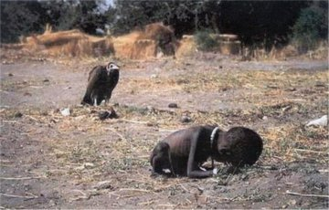

The Vulture and the Little Girl
Kevin Carter · March 1993 · Photograph
In copyright. Look and learn: shown for study, not for download.
Kevin Carter, a South African photographer of thirty-two, flew into Ayod in southern Sudan in March 1993 on a small United Nations plane bringing food aid; it was due to leave within the hour. The New York Times ran the picture on 26 March, and so many readers asked about the child that four days later it reported that the child had walked on once the vulture was chased away. In 2011 the father said it was a boy, Kong Nyong, who died around 2007 of fevers. Carter won the 1994 Pulitzer Prize and died by suicide that July, at thirty-three.